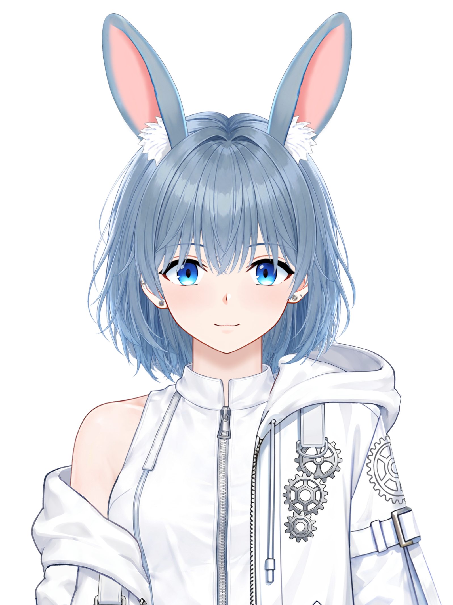
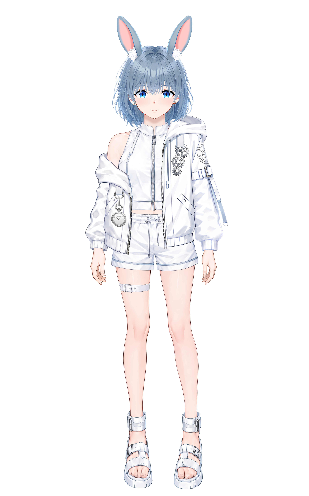
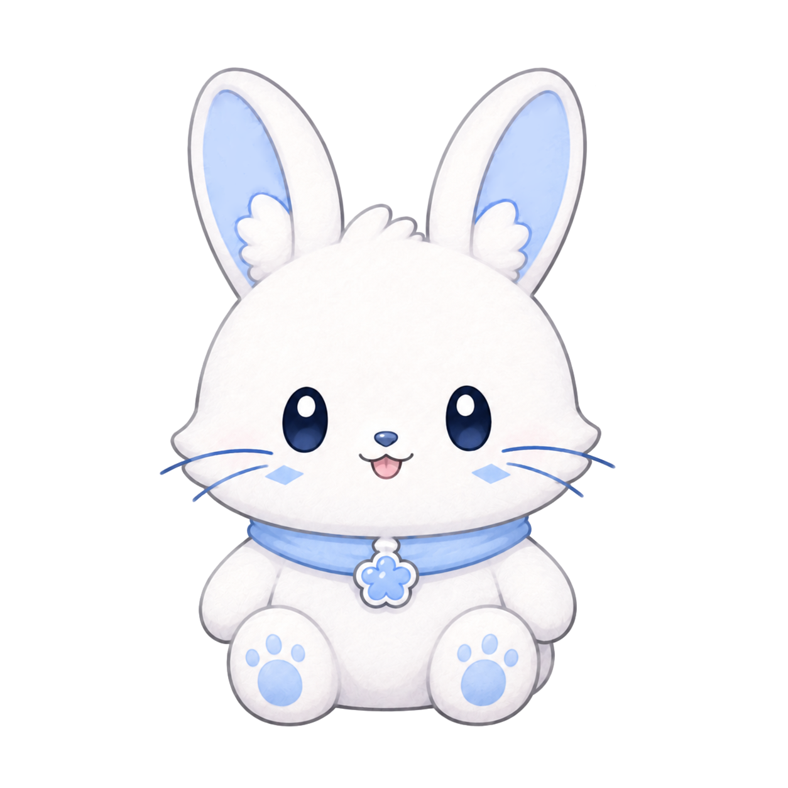
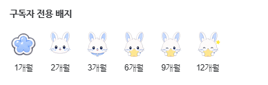
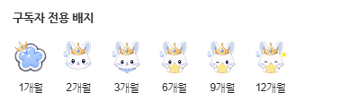
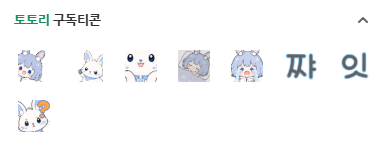

정보 문서
아시토
버추얼 스트리머 아시토(Asito)의 공개 프로필과 방송 활동을 정리한 전용 위키형 정보 페이지입니다.
| 아시토 ASITO | |
|---|---|
|
 |
|
| 이름 | 아시토 (Asito) |
| 나이 | 999살[1] |
| 종족 | 토끼 |
| 성별 | 여성 |
| 생일 | 9월 29일 |
| 신장 | 153cm |
| 반려묘 | 심바[2] |
| 팬네임 | 토토리 (totori) |
| 데뷔 | 2026년 4월 29일 (D+-일) |
| MBTI | ISTJ |
| 관련 링크 | |
| 플랫폼 | 치지직 YouTube YouTube 다시보기 |
| 커뮤니티 | 네이버 카페 |
| SNS | X (Twitter) Instagram TikTok |
1. 개요
아시토는 2026년 4월 29일 데뷔한 버추얼 스트리머이자 종합 게임 스트리머로, 현재 치지직을 중심으로 활동하고 있다.
“하이하이요! 시공간 여행자 토끼 아시토입니다✨”
— 대표 인사말
2. 방송
2.1. 방송 특징
- 목소리 톤은 낮은 편이지만 게임을 할 때는 캐릭터의 타격감에 동기화되듯 직접 기합을 넣는 습관이 있다. 특히 “쨔잇!”, “얍!” 같은 기합 소리가 방송의 감초 역할을 하며, 이 습관에서 착안해 구독 이모티콘에도 “쨔”, “잇”이 추가되었다. 기분이 좋거나 신날 때 나오는 “와앙!” 게임이 잘 풀렸을 때의 “아싸!” 등 특유의 시그니처 사운드가 뚜렷한 편이다.
- 현실과 방송 모두에서 욕설을 거의 사용하지 않는 ‘순한 맛’ 방송을 지향한다.
- 정규 방송은 대체로 평일 오후 9시 30분, 주말 오후 8시에 시작해 새벽 2시 전후에 마무리한다.[3] 게임의 플레이 타임이 길어지거나 텐션이 올라간 날에는 새벽 4시를 넘기거나 밤을 새운 적도 있으나, 휴방일의 컨디션 조절이 어렵다는 이유로 가급적 새벽 1~2시 안에는 방송을 종료하려고 한다.
- 아이템 운이 매우 좋은 편이다. [4] 반면 압도적인 아이템 운과 대비되는 아쉬운 컨트롤이 종종 나와 시청자들의 긴장감을 높이기도 한다. 시청자들의 집단 지성이나 공략 조언을 적극적으로 수용해 게임을 풀어나가는 편이다.[5]
2.2. 방송 규칙
찾아와줘서 고마우요! 잘 지내봅시당✨
- 시청자 수 언급 금지
- 시청자 간 닉네임 언급·친목 대화·저격 금지, 시청자가 다른 시청자를 관리하려는 이른바 ‘경찰 행동’ 금지
- 나가거나 자러 갈 때 별도의 퇴장 인사를 하지 않기
- 방송 흐름과 관계없는 이야기(TMI, 뻐꾸기, 스포일러, 타 스트리머 언급, 정치 등) 금지
그 외에도 방송 분위기를 해치는 채팅은 경고 없이 제재될 수 있다.
2.3. 밈
| 토토리 | 시청자들을 가리키는 팬네임. ‘토토’와 ‘토리’ 중 고민하다가 두 이름을 합쳐 ‘토토리’가 되었다고 한다. 토토리 캐릭터 디자인 역시 시토가 직접 했다고 한다. |
|---|---|
| 시토데이 | 정규 방송이 있는 날을 부르는 명칭. |
| 버시토콜 | ‘시토’와 ‘버스터 콜’의 합성어. 네이버 카페에 공지한 뒤 치지직에서 단체 채팅을 하거나 기습 방송을 켤 때 사용하는 명칭이다. |
| ~쌤 | 새로운 게임을 할 때 훈수를 적극적으로 수용하는 편이라 해당 게임의 숙련 시청자들을 ‘선생님’처럼 부르는 표현. 게임명 첫 글자에 ‘쌤’을 붙인다.[6] |
3. 디자인
3.1. 캐릭터 및 팬캐릭터


3.2. 이모티콘 및 구독 배지



4. 콘텐츠
4.1. 시토월드 - 팰월드
운영 기간: 2026.07.17 ~ 2026.07.31
4.2. 시토월드 - 마인크래프트
운영 기간: 2026.09.20 ~ 2026.09.27
5. 여담
5.1. 방송 관련
- 다른 스트리머들이 시청자와 티키타카를 하며 게임하는 모습을 보고 재미있어 보여 본인도 방송을 시작하게 되었다고 한다.
- 현재까지 다른 스트리머와 합방을 진행한 적은 없다. 방송에 충분히 익숙하지 않은 상태에서 합방할 경우 시청자와 합방 상대 양쪽에 신경을 써야 하고, 그 과정에서 기존 시청자들을 충분히 챙기지 못할 수 있다는 이유로 합방을 지양하고 있다고 한다.
- 방송을 시작하기 위해 캐릭터 리깅부터 OBS 설정, 대기 화면, 화면 전환, 이모티콘 등 방송에 필요한 준비를 독학해 대부분 혼자 완성했다고 한다.
- 방송 초창기에는 중성적인 숏컷과 넓은 어깨 프레임 때문에 캐릭터를 남성으로 오해하는 반응이 종종 있었으나, 방송 100일 기념으로 의상과 아바타를 대대적으로 리뉴얼한 뒤 이러한 오해가 크게 줄었다.[7]
- 게임 중에서는 특히 테트리스를 좋아한다. 방송 초기에 처음 접했지만 테트리스 숙련 시청자들의 꾸준한 칭찬과 응원으로 재미를 붙였고, 관련 방송을 자주 하면서 시청자 중 테트리스를 플레이할 줄 아는 사람의 비율도 높은 편이라고 한다.
- 스토리에 몰입하게 되는 심리적 공포 장르에 특히 약한 편이다. 《쓰르라미 울 적에 Ch.1 오니카쿠시》를 플레이하면서 크게 무서워하는 모습을 보였으며, 당시 인상 깊었던 대사[8]나 점프 스케어 장면(매의 눈)과 비슷한 치지직 이모티콘이 등장하면 기겁하기도 한다.[9]
- 오랜 ‘유애나’(가수 아이유의 팬덤)이다. 이 때문에 방송에서는 아이유에 대한 험담이 사실상 금기시되어 있으며, 잘못 언급했다가는 밴을 당할 수도 있다.
- 치지직 팔로워 150명 달성을 기념해 공포 게임 《REANIMAL》을 플레이했다.
5.2. 성격 및 취향 관련
- 전형적인 ‘J(판단형)’ 성향으로 방송 시간이나 플레이할 게임을 미리 정해 두는 것을 선호하며, 생일이나 데뷔일 같은 기념일 이벤트도 일찍부터 준비한다고 한다.
- 본인은 원래 완벽한 ‘T(사고형)’ 성향이었으나, 쌍둥이 동생 ‘리토’와 막내 ‘시즈’ 등 F 성향의 동생들에게 감성을 깊이 학습받았다고 자부한다.
- 게임을 하다 텐션이 오르면 배경에 나오는 신나는 노래를 무의식적으로 따라 부르는 습관이 있다. 시청자들이 이를 알려줘 뒤늦게 자각하면 몹시 머쓱해하는 편.
- 벌레와 생김새가 징그러운 것을 매우 싫어한다. 조개, 꽃게, 생선 등 해산물도 생김새가 부담스럽다는 이유로 거의 먹지 않으며, 특별한 알레르기 때문이라기보다는 먹어도 맛을 잘 모르겠다고 한다.
- 고양이를 키우는 집사이지만 방송에서 밝힌 바에 따르면 고양이 알레르기가 있다.[10] 이 밖에도 사과, 복숭아, 콩, 햇빛, 꽃가루 등 여러 알레르기가 있어 일상생활과 식단 관리에 제약이 있는 편이라고 한다.
- 작고 아담한 체구와 달리 운동을 매우 즐긴다. 수영, 크로스핏, 복싱, 태권도, 검도 등 다양한 운동을 경험했으며, 낮에 일정을 소화한 뒤에도 장시간 방송을 이어갈 만큼 체력이 좋은 편이다.
5.3. 개인사 및 설정 관련
6. 게임
6.1. 플레이한 게임
- 리그 오브 레전드
- 배틀그라운드
- 오버워치
- 메이플스토리
- 메이플스토리 월드
- 메이플스토리 플래닛
- TETR.IO
- 세피리아
- 작혼: 리치 마작
- 팰월드
- 파티 애니멀즈
- 프랫폴
- 쓰르라미 울 적에 Ch.1 오니카쿠시
- 몬스터 헌터: 월드
- REANIMAL
6.2. 플레이를 중단한 게임
7. 관련 링크
8. 각주
- 시공간을 여행하는 토끼이기 때문에 나이는 큰 의미가 없다고 한다. ↩
- 코리안 숏헤어 턱시도. 가끔 방송에서 사진을 보여주기도 한다. ↩
- 원래 주말 방송도 오후 9시 30분에 시작했으나, 방송을 더 오래 하고 싶어 시작 시간을 오후 8시로 앞당겼다고 한다. ↩
- 세피리아 게임 중 2층에서 전설 아티팩트 4개와 희귀 아티팩트 6개를 획득했다. ↩
- 시토 본인에게 피지컬이 좋은 분야가 따로 있다고 생각한다.(아직 못찾은거같다고..) ↩
- 예시: 테쌤(테트리스), 지쌤(지오메트리 대쉬), 몬쌤(몬스터 헌터). ↩
- 방송을 급하게 준비하면서 초반 아바타의 디테일을 충분히 챙기지 못했다고 한다. ↩
- “미안해미안해미안해”, “아하하하하하” 등 ↩
- 해당 게임 방송이 끝난 뒤 바로 방송을 종료하기에는 너무 무섭다며 TETR.IO를 플레이해 마음을 진정시킨 뒤 방송을 마쳤다. ↩
- 컨디션이 좋지 않은 날에는 방송 중 눈을 자주 비비는 모습을 보이기도 한다. ↩
- 원래는 2,000치즈였으나 시토가 너무 자주 맞는다는 이유로 5,000치즈로 단가가 올랐다고 한다. ↩
- 이 때문에 평일 낮 방송은 어려운 편이라고 한다. ↩
- 3D 멀미가 심해져 구토할 정도라 플레이를 중단했다고 한다. ↩
- 점프 구간에서 크게 고전해 약 1시간 만에 튜토리얼을 마쳤고, 이후 다시 약 1시간가량 도전했으나 결국 이른바 ‘강종 엔딩’으로 플레이를 마무리했다. ↩
- 밤에 빛나는 해양 생물들이 무리 지어 있는 장면에서 환공포증을 느껴 진행을 이어가지 못하고 플레이를 중단했다고 한다. ↩
출처 메모
현재 각주는 사용자가 정리한 방송 발언·에피소드 설명을 기반으로 구성되어 있습니다. 실제 공개 전에는 가능하면 해당 방송 클립, 다시보기, 공식 SNS 또는 카페 공지 링크를 각 항목에 추가하는 것을 권장합니다.